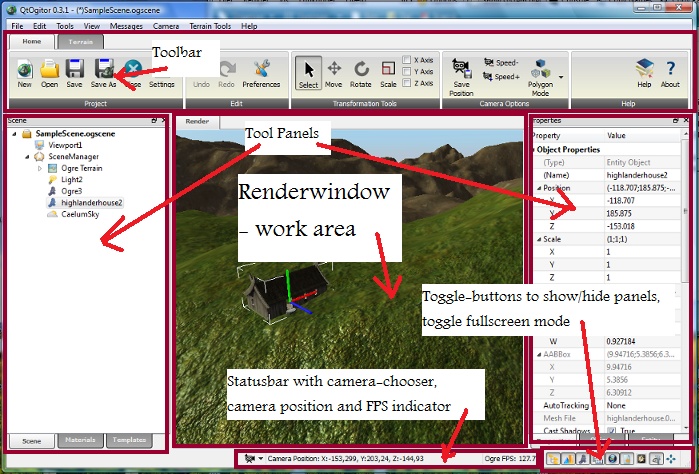

Interface.
The interface of qtOgitor is composed of five main elements:

- Render window - the main work area.
This is where the main interaction with Ogitor occurs. - Toolbar.
The toolbar is where the most common operations are: scene commands, transformation tools, etc. - Tool panels.
These dockable tool panels can be shown/hidden and moved around, either docked and floating.- Scene Panel
Hierarchical view of the scene. Select nodes in the tree and see their properties in the Property panel.
Selecting nodes in the tree will select them in the main view, and the other way around. - Materials Panel
A treeview of all available materials. Drag a material to an mesh object in the scene to change it's material.
The Properties panel lets you inspect and edit the properties of the material. - Templates Panel
You can add templates by selecting an object and add it. - Properties Panel
The property panel lets you inspect and change properties of currently selected Ogitor objects. - Meshes Panel
Shows all available meshes. Drag and drop a mesh into the main view to add it to the scene. - Objects Panel
All available object plugins are show on this panel. Drag and drop into the main view to add them to the scene.
- Scene Panel
- Toggle buttons.
These buttons lets you toggle the various tool panels on/off.
Also has a button to toggle full screen mode. - Statusbar.
Contains a Camera menu which lets you store and retrieve camera positions.
It also shows the current camera position and the frames per second rendered (FPS).